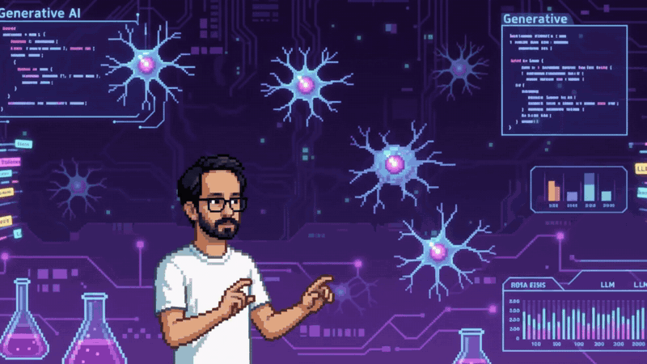

Connect Your Windows PC to Your AI Agent with Copilot Studio Computer Use
Setting up a local Windows PC as a Personal Desktop Agent using Microsoft Copilot Studio's Computer Use.
AI & Python Developer building RAG pipelines and agentic systems: FastAPI backends, vector search, and multi-agent orchestration with LangChain and OpenAI models. Based in Istanbul.

Generative AI, from tokens to neurons.
Setting up a local Windows PC as a Personal Desktop Agent using Microsoft Copilot Studio's Computer Use.
What happened at Microsoft Ignite 2025.
Google Cloud'un Video Intelligence API hizmetine giriş: kurulum ve ilk adımlar.
Bulut tabanlı görüntü işleme ve computer vision üzerine genel bir bakış.
FastAPI app powered by a multi-agent architecture: LLM-based task routing, session/memory management, and MongoDB — fully Dockerized.
github.com ↗Autonomous, customizable and modular social media AI agent framework built for automation.
github.com ↗FastAPI backend that visualizes video analysis results from Google Cloud Video Intelligence API on a Streamlit dashboard.
github.com ↗Generates image content for photos using AI-driven pipelines.
github.com ↗Generates new game assets in a consistent artistic style using FAL AI's style-transfer models.
github.com ↗Predicts Australia's air quality up to 2030 using time series analysis on historical data.
github.com ↗IBM Data Science capstone: predicting SpaceX Falcon 9 first-stage landing success.
github.com ↗Sentiment analysis on tweets pulled live via the Twitter API.
github.com ↗Approachable notes and notebooks for learning data science from the ground up.
github.com ↗Kocaeli University
Udemy
Tech Istanbul
Miuul
IBM
Based in Istanbul. Open to interesting projects, collaborations, and conversations about AI, agents, and RAG.